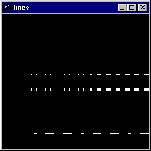
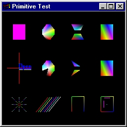
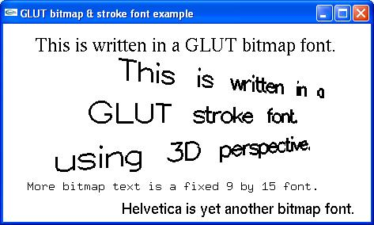

lines.c. Demonstra o uso de primitivas geométricas e seus atributos.
Programa lines.c

prim.c. Todas as primitivas do OpenGL.
Programa prim.c

fontdemo.c. Escrita de letras no OpenGL - Ex 1.
Programa fontdemo.c

fonttest.c. Escrita de letras no OpenGL - Ex 2.